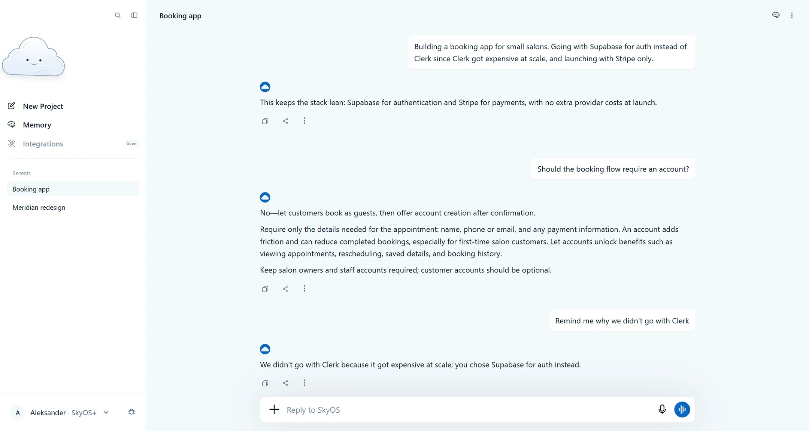

An AI chat that doesn’t lose the thread
Ask an AI what you decided a month ago and you get “we discussed pricing.” Not the number.
No card. Works in your browser on desktop and mobile.

Ask an AI what you decided a month ago and you get “we discussed pricing.” Not the number.
No card. Works in your browser on desktop and mobile.
The further into a conversation you get, the more the specifics blur. Old messages quietly drop out of view, and everything still there carries the same weight — the decision you made in hour one and the idea you threw out ten minutes later look identical.
So you re-explain the project every time you come back to it, or you keep the real facts in a document on the side and paste them in by hand.

Not at the end, not on request. As you talk, the things you settle on become short notes — what you chose, why, and what you ruled out.
Nothing is summarised on the way in or on the way out. That’s the difference between “$15/month, annual only” and “we discussed pricing.”
Say something different and the note changes with you, so the old decision stops competing with the new one. A transcript can’t do that — the old message just sits there.
Every note is visible, dated, and yours to edit or delete. Nothing is remembered that you can’t see.
SkyOS can import the memory from ChatGPT, Claude or Gemini, so it starts knowing your work instead of starting blank.
Try SkyOS — freeFree while it’s in beta.